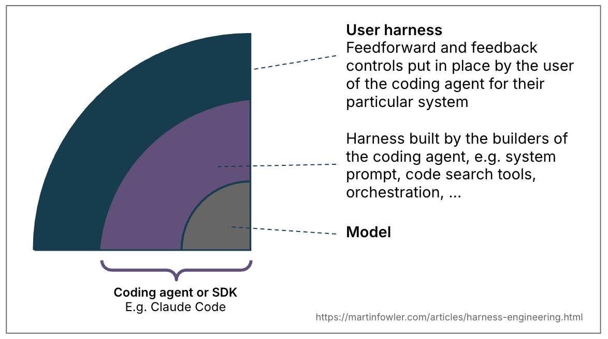
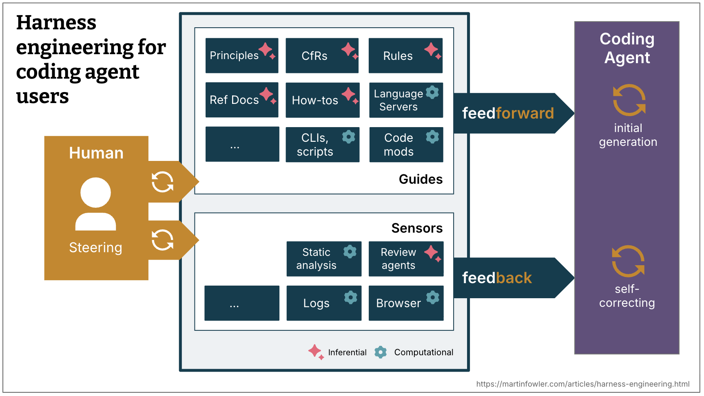
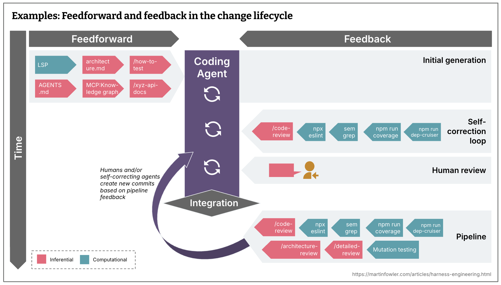
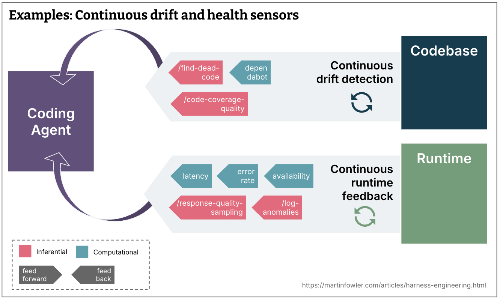
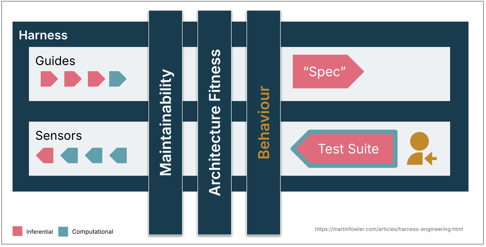
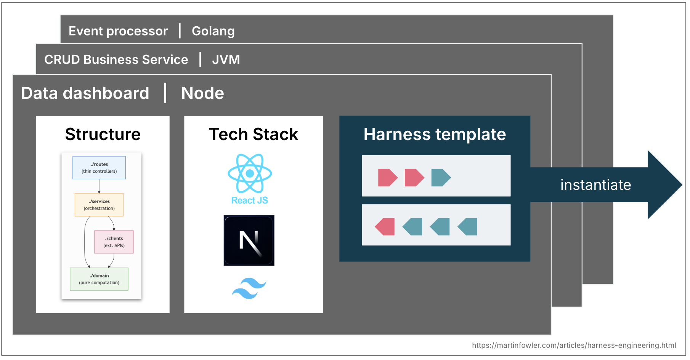

要讓寫程式代理（coding agent）在監督更少的情況下工作，我們得想辦法提高對代理產出的信心。身為軟體工程師，我們對 AI 生成的程式碼有一道自然的信任門檻：LLM 不具確定性，不知道我們的脈絡，也不算真的懂程式碼，它們是用 token 思考的。本文提出一個思考模型，把脈絡工程（context engineering）與工具鏈工程（harness engineering）裡正在成形的一些概念串起來，用來建立那份信任。
目錄（Contents）
- 前饋與回饋（Feedforward and Feedback）
- 運算式與推論式（Computational vs Inferential）
- 操舵迴路（The steering loop）
- 時機：把品質盡量往左推（Timing: Keep quality left）
- 調節類別（Regulation categories）
- 可工具鏈化程度（Harnessability）
- 工具鏈模板（Harness templates）
- 人的角色（The role of the human）
- 一個起點，以及待解的問題（A starting point - and open questions）
側欄（Sidebars）
- 比喻有其極限（Metaphors only go so far）
- 工具鏈工程與脈絡工程是什麼關係？（How does harness engineering relate to context engineering?）
- 環境賦予的可能（Ambient affordances）
- Ashby 定律（Ashby's Law）
本文更新自一份較早的備忘錄，記錄我對工具鏈工程的第一印象。
工具鏈（harness）這個詞已經成了一個簡稱，指 AI 代理裡除了模型本身以外的一切（Agent = Model + Harness）。這個定義非常廣，值得針對常見的代理類別再收窄一點。我想在這裡擅自把它限定在「使用寫程式代理」這個受約束的脈絡（bounded context）下來定義。在寫程式代理裡，有一部分工具鏈已經內建了，例如透過系統提示、選定的程式碼檢索機制，或甚至是一套精密的編排系統。但寫程式代理也給我們這些使用者很多功能，讓我們能針對自己的使用情境與系統，在外面另外打造一層工具鏈。
比喻有其極限（Metaphors only go so far）
有人向我指出，在工具鏈外面再套工具鏈是說不通的：「你試過把馬具套在狗身體內側嗎？」所以這比喻確實撐得有點過頭，但如果它有助於釐清這個詞的用法，我樂於接受。

一套打造良好的外層工具鏈服務兩個目標：提高代理第一次就做對的機率，以及提供一道回饋迴路，在問題還沒送到人類眼前之前就盡可能自我修正掉。到頭來它應該要減少審查的粗活、提升系統品質，附帶的好處是一路上少浪費一些 token。

前饋與回饋（Feedforward and Feedback）
要為寫程式代理套上工具鏈，我們既預先設想不受歡迎的產出並設法阻止，也佈下感測器讓代理能自我修正：
- 引導（前饋控制，Guides / feedforward controls）：預先設想代理的行為，並在它行動之前就設法操舵。引導提高代理第一次嘗試就產出好結果的機率。
- 感測器（回饋控制，Sensors / feedback controls）：在代理行動之後觀察，幫它自我修正。感測器產出的訊號若是為 LLM 消費而最佳化，就特別有力，例如自訂的 linter 訊息裡夾帶自我修正的指示，這是一種正面的提示注入。
只做其中一邊，你得到的不是一個反覆犯同樣錯誤的代理（只有回饋），就是一個把規則編碼進去、卻永遠不知道有沒有效的代理（只有前饋）。
運算式與推論式（Computational vs Inferential）
引導與感測器有兩種執行型態：
- 運算式（Computational）：確定性、速度快，由 CPU 執行。測試、linter、型別檢查器、結構分析。執行時間從毫秒到秒；結果可靠。
- 推論式（Inferential）：語意分析、AI 程式碼審查、「LLM as judge」。通常由 GPU 或 NPU 執行。較慢、較貴；結果較不確定。
運算式引導用確定性的工具提高好結果的機率。運算式感測器便宜又快，足以跟著代理在每次變更時一起跑。推論式控制當然更貴、也不確定，但讓我們既能提供豐富的指引，又能加入額外的語意判斷。推論式感測器儘管不確定，只要配上強大的模型，就特別能提高我們的信任。更準確地說，是配上適合眼前任務的模型。
範例（Examples）
| 方向 | 運算式／推論式 | 範例實作 | |
|---|---|---|---|
| 程式碼慣例 | 前饋 | 推論式 | AGENTS.md、Skills |
| 如何建立新專案的指示 | 前饋 | 兩者皆是 | 帶有指示與啟動腳本的 Skill |
| Code mod | 前饋 | 運算式 | 能取用 OpenRewrite recipe 的工具 |
| 結構測試 | 回饋 | 運算式 | pre-commit（或寫程式代理）hook 執行 ArchUnit 測試，檢查是否違反模組邊界 |
| 如何審查的指示 | 回饋 | 推論式 | Skills |
工具鏈工程與脈絡工程是什麼關係？（How does harness engineering relate to context engineering?）
脈絡工程提供我們方法，把引導與感測器變得能讓代理取用。為寫程式代理打造使用者工具鏈，是脈絡工程的一種具體形式。
操舵迴路（The steering loop）
人的工作在於透過迭代工具鏈來操舵代理。只要某個問題發生過不只一次，就該改進前饋與回饋控制，讓這個問題未來更不容易出現，甚至根本不會發生。
在操舵迴路裡，我們當然也可以用 AI 來改進工具鏈。寫程式代理讓打造更多自訂控制與自訂靜態分析變得便宜許多。代理可以幫忙寫結構測試、從觀察到的模式生成規則草稿、搭出自訂 linter 的骨架，或從程式碼庫的考古現場整理出操作指南。
時機：把品質盡量往左推（Timing: Keep quality left）
採行持續整合的團隊一向要面對這個難題：依成本、速度與關鍵程度，把測試、檢查與人為審查分配到開發時程的不同位置。你想做到持續交付，最好連每一個提交狀態都能部署。你會希望檢查盡可能落在通往正式環境路徑的左端，因為越早發現問題，修起來越便宜。回饋感測器，包括新的推論式感測器，也得照這個原則分散到生命週期各處。
變更生命週期中的前饋與回饋（Feedforward and feedback in the change lifecycle）
- 哪些夠快，應該在整合前、甚至提交都還沒建立之前就跑？（例如 linter、快速的測試套件、基本的程式碼審查代理）
- 哪些比較貴，因此只該在整合之後於管線中執行，外加把快速控制再跑一遍？（例如突變測試、範圍更廣、能顧及整體大局的程式碼審查）

持續偏離與健康度感測器（Continuous drift and health sensors）
- 哪一類偏離是逐漸累積的，該由在變更生命週期之外、持續對程式碼庫執行的感測器來監控？（例如死程式碼偵測、測試覆蓋品質分析、相依套件掃描器）
- 代理可以監看哪些執行期回饋？（例如讓它們找出正在劣化的 SLO 並提出改進建議，或讓 AI judge 持續抽樣回應品質、標記日誌異常）

調節類別（Regulation categories）
代理工具鏈像是一具控制論上的調節器（governor），結合前饋與回饋，把程式碼庫調節往我們想要的狀態。把那個理想狀態拆成幾個維度來區分很有用，分類的依據是工具鏈要調節什麼。區分這些類別有幫助，因為它們的可工具鏈化程度與複雜度各不相同，而且替這個詞加上限定語，能讓它原本過於籠統的意思有更精確的說法。
以下三個類別，就我目前看來是有用的：
可維護性工具鏈（Maintainability harness）
我在本文舉的例子，幾乎都跟調節內部程式碼品質與可維護性有關。目前這是最容易的一類工具鏈，因為我們有大量現成的工具可以用。
為了檢視前面這些可維護性工具鏈的想法究竟提高了多少我對代理的信任，我把它對照上我之前整理過的常見代理失效模式。
運算式感測器能可靠地抓到結構性的問題：重複的程式碼、循環複雜度、測試覆蓋不足、架構偏離、風格違規。這些便宜、經過驗證，而且具確定性。
需要語意判斷的問題，LLM 可以處理一部分：語意上重複的程式碼、冗餘的測試、暴力解法、過度設計的方案。但代價高，而且是機率性的。不可能每次提交都跑。
還有一些影響更大的問題，兩者都抓不牢：誤判問題、過度工程與多餘的功能、誤解指示。它們有時抓得到，但沒可靠到足以減少監督。如果人類從一開始就沒把想要的東西講清楚，正確性根本不在任何感測器的職責範圍內。
架構適應性工具鏈（Architecture fitness harness）
這一類把定義並檢查應用程式架構特徵的引導與感測器歸在一起。基本上就是：適應函數（Fitness Functions）。
例如：
- 把效能需求前饋出去的 Skill，以及把效能有沒有提升或退步回饋給代理的效能測試。
- 描述提升可觀測性之程式碼慣例（例如日誌標準）的 Skill，以及要求代理反思自己手上日誌品質的除錯指示。
行為工具鏈（Behaviour harness）
這是房間裡的大象：我們要怎麼引導並感知應用程式的功能行為，是否符合我們的需求？目前我看到大部分給寫程式代理高度自主權的人，是這樣做的：
- 前饋：一份功能規格（詳細程度不一，從一段簡短提示到多檔案的描述都有）。
- 回饋：檢查 AI 生成的測試套件是不是綠的、覆蓋率是否夠高，有些人甚至用突變測試監控測試品質。然後再搭配手動測試。
這個做法把很大的信任押在 AI 生成的測試上，而這還不夠好。我有幾位同事在已核准的夾具（approved fixtures）這個模式上看到不錯的結果，但它在某些領域比其他領域容易套用。他們只在合適的地方選擇性使用，這並不是測試品質問題的全盤解答。
所以整體來說，要為功能行為設計出夠好的工具鏈，讓我們的信心高到能減少監督與手動測試，還有很多工作要做。

可工具鏈化程度（Harnessability）
不是每個程式碼庫都同樣適合套上工具鏈。用強型別語言寫成的程式碼庫，天生就有型別檢查可當感測器；模組邊界定義清楚，就能訂出架構限制規則；像 Spring 這類框架把細節抽象掉，代理連操心都不用，等於間接提高了代理成功的機會。少了這些性質，那些控制就無從打造。
環境賦予的可能（Ambient affordances）
我同事 Ned Letcher 用「環境賦予的可能（ambient affordances）」一詞，指稱讓環境更容易套上工具鏈的那些性質：「環境本身的結構性質，使它在其中運作的代理眼中顯得可讀、可導航、可駕馭。」
這件事在全新專案與既有系統上的發展很不一樣。全新專案的團隊可以從第一天就把可工具鏈化程度做進去：技術決策與架構選擇決定了程式碼庫以後有多好治理。既有系統的團隊，尤其是應用程式已累積大量技術債的那些，面對的是更難的題目：最需要工具鏈的地方，恰恰是最難打造工具鏈的地方。
工具鏈模板（Harness templates）
多數企業都有幾種常見的服務拓樸，涵蓋了他們八成的需求：透過 API 提供資料的業務服務、事件處理服務、資料儀表板。在許多成熟的工程組織裡，這些拓樸已經寫成服務模板。它們未來可能演化成工具鏈模板：一組引導與感測器，把寫程式代理拴在某個拓樸的結構、慣例與技術堆疊上。團隊挑選技術堆疊與結構時，或許會開始把「這套組合已經有哪些現成工具鏈可用」納入考量。

Ashby 定律（Ashby's Law）
Ashby 的必要多樣性定律是支持這些預先定義拓樸的另一個有趣論證。定律說，調節者擁有的多樣性至少得跟它所治理的系統一樣多，而且只能調節自己握有模型的東西。以 LLM 為基礎的寫程式代理幾乎什麼都能生，但一旦選定某個拓樸，就縮窄了那個空間，讓一套完整的工具鏈變得比較可能做到。定義拓樸是一種減少多樣性的手段。
我們當然也會遇到跟服務模板類似的挑戰。團隊一實例化模板，就開始與上游的改進脫節。工具鏈模板會碰上同樣的版本管理與貢獻問題，甚至更糟，因為引導與感測器不具確定性，更難測試。
人的角色（The role of the human）
身為人類開發者，我們把自身的技能與經驗當成一套隱性工具鏈，帶進每一個程式碼庫。我們吸收了慣例與良好實務，感受過複雜度帶來的認知痛苦，也知道提交上掛著自己的名字。我們還帶著組織上的對齊：清楚團隊想做什麼、哪些技術債出於商業理由可以容忍、在這個特定脈絡裡「好」長什麼樣子。我們以小步前進，依人類的步調，這就騰出了思考空間，讓那些經驗有機會啟動、派上用場。
寫程式代理這些都沒有：沒有社會問責，不會對一個 300 行的函式產生美感上的嫌惡，沒有「我們這裡不這樣做」的直覺，也沒有組織記憶。它不知道哪些慣例是承重的、哪些只是習慣，也不知道技術上正確的解法符不符合團隊想做的事。
工具鏈是一種嘗試，把人類開發者經驗帶來的東西外部化、講明白，但它能做的有限。打造一套由引導、感測器與自我修正迴路組成的連貫系統很貴，所以我們必須帶著清楚的目標排優先順序：好的工具鏈未必要以完全消除人為投入為目標，而是把人的投入導引到最重要的地方。
一個起點，以及待解的問題（A starting point - and open questions）
我在這裡鋪陳的思考模型，描述的是實務上已經在發生的手法，並有助於組織討論我們還有什麼要弄清楚。它的目標是讓對話不再停留在功能層次：從 skill 與 MCP server，談到我們如何策略性地設計一套控制系統，讓我們對代理的產出有真正的信心。
以下是當前討論中一些與工具鏈相關的例子：
- OpenAI 的一個團隊記錄了他們的工具鏈長什麼樣：以自訂 linter 與結構測試強制執行的分層架構，以及反覆進行的「垃圾回收」，掃描偏離並讓代理提出修正建議。他們的結論是：「我們現在最困難的挑戰，在於設計環境、回饋迴路與控制系統。」
- Stripe 關於自家 minion 的技術文描述了依啟發式規則執行相關 linter 的 pre-push hook 之類的做法，他們強調「把回饋往左推」對自己有多重要，而他們的「blueprint」也顯示如何把回饋感測器整合進代理工作流。
- 突變測試與結構測試是運算式回饋感測器的例子，過去用得偏少，現在又開始復甦。
- 開發者之間對在寫程式代理裡整合 LSP 與程式碼智慧的討論變多了，那是運算式前饋引導的例子。
- 我聽 Thoughtworks 的團隊講述他們同時用運算式與推論式感測器來處理架構偏離，例如用代理與自訂 linter 混搭來提升 API 品質，或用一支「清潔工大軍」來提升程式碼品質。
還有很多東西要弄清楚，不只前面提過的行為工具鏈。工具鏈長大之後，我們要怎麼讓它保持連貫，讓引導與感測器彼此同步、不互相矛盾？指示與回饋訊號指向不同方向時，我們能信任代理做出合理的取捨到什麼程度？如果感測器從來不響，那代表品質很高，還是偵測機制不夠？我們需要一套評估工具鏈覆蓋度與品質的方法，類似程式碼覆蓋率與突變測試之於測試。前饋與回饋控制目前散落在交付的各個步驟裡，很有潛力發展出工具，幫忙把它們當成一個系統來配置、同步與推敲。打造這層外層工具鏈，正在變成一件持續進行的工程實務，而不是一次性的設定。
致謝（Acknowledgements）
非常感謝 Doppler 團隊在上次技術雷達會議中的熱烈討論，尤其是 Kief Morris 提起控制論。謝謝 Ned Letcher、Chris Ford 與 Ben O'Mahoney 一起談工具鏈究竟是什麼，也謝謝 Matteo Vaccari 對行為工具鏈的洞見。還要謝謝所有花時間讀草稿並提供寶貴回饋的人：Christoph Burgmer、Jörn Dinkla、Michael Feathers、Karrtik Iyer、Swapnil Phulse、Paul Sobocinski、Zhenjia Zhou。
本文以 GenAI（Claude 與 Claude Code）協助研究、從既有筆記中汲取相關想法，並潤飾文字。
更多關於感測器（More on sensors）
我寫了一篇後續文章，描述我在可維護性感測器上的實驗與心得。
更早的備忘錄（Earlier Memo）
我在二月初寫了一份備忘錄，記錄工具鏈工程這個詞剛出現時我最初的想法。那篇文章吸引了很多流量。本文取代了那份備忘錄，所以我們把原本的備忘錄網址重新導向到這一頁，因為我們相信這一頁對讀者來說是更好的資源。
重要修訂（Significant Revisions）
2026 年 4 月 2 日：發布完整文章，包含引進引導、感測器、運算式與推論式元素，以及工具鏈模板
2026 年 2 月 17 日：發布我關於工具鏈工程的最初備忘錄